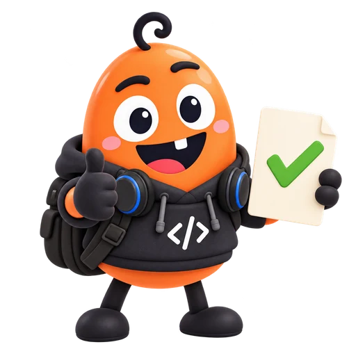

가상 매뉴얼
r1 §2: 단위 ns
r2: 불일치 주입
E4 · EDA 선택
가상 매뉴얼 질문 하나를 끝까지 검증합니다.
준비 · E0–E2 · 설계 툴/리포트 경험 (E3 불필요)
실습과 도식은 가상 교육 예시 · 2026.10.12
E4 · EDA 선택
| 항목 | 이번 실습 |
|---|---|
| 툴·릴리즈 | MockSTA r1 · 가상 교육용 툴 |
| 질문 | report_mock_timing의 출력 단위는? |
| 자료 | 공개 모의 매뉴얼 §2 + 가상 리포트 |
| 완료 | 단위·버전·원문 절·미정 조건을 함께 출력 |
실제 상용 툴 매뉴얼·설계 데이터는 사용하지 않습니다.
E4 · EDA 선택
r1 §2: 단위 ns
r2: 불일치 주입
버전·질문을 받아
문서와 출처 반환
승인된 문서 저장소
인증·권한·버전 검사
사내 JedAI·MCP가 이미 연결됐다고 가정하지 않습니다.
E4 · EDA 선택
Agent를 만들기 전에 도구의 요청과 응답부터 확인합니다.
E4 · EDA 선택
요청한 릴리즈 없음
지원 버전 안내
사용할 수 없는 자료
추가 권한을 추정하지 않음
r1 요청에 r2 결과
검증에서 반려
다른 버전의 문서로 빈칸을 조용히 채우지 않습니다.
E4 · EDA 선택
Skill은 작업 방법을 알려 주는 지시 묶음입니다.
OpenCode · Skills · 확인 2026-10-12
E4 · EDA 선택
버전·명령 인자 검사
자료 조회
어느 릴리즈인지
사용자에게 확인
없는 내용을 생성해
완료하지 않기
먼저 한 Agent · 한 도구 · 한 결과를 완성합니다.
OpenCode · Agents · 확인 2026-10-12
E4 · EDA 선택
"permission": {
"skill": {"*": "deny", "manual-review": "allow"}
}사용 버전의 permission.skill과 실제 도구 권한을 각각 확인합니다.
OpenCode · Skills · 확인 2026-10-12
E4 · EDA 선택
파일이 생겼다는 사실과 내용 검증 성공을 구분합니다.
E4 · EDA 선택
| 도구 결과 | 행동 |
|---|---|
| 일시 오류 | 최대 3회 · 전체 시간 예산 안에서 재시도 |
| 근거·버전 일치 | 검증 후 완료 |
| 거부·자료 없음·버전 불일치 | 인계 · 실패 원인 보존 |
| 반복 한도·시간 초과 | 중단 · 마지막 상태 저장 |
“Example Code”라는 문자열 하나로 최신 문서 확보를 판정하지 않습니다.
Anthropic · Agent 구조 · 확인 2026-10-12
E4 · EDA 선택
| 검사 | 기대값 | 실습 반려 예 |
|---|---|---|
| 릴리즈 | r1 | r2 문서를 인용 |
| 단위 | ns | ps라고 출력 |
| 출처 | manual-r1 §2 | 없는 절을 인용 |
| 명령 | report_mock_timing | 다른 명령으로 답변 |
LLM의 PASS보다 원문·버전·적용 조건을 봅니다.
E4 · EDA 선택
MockSTA r1
slack = −0.08 ns
코너·부호·단위가
모두 바뀌었습니다
해설: 원문 값과 조건을 보존하고 해석은 별도로 적습니다.
E4 · EDA 선택
컨텍스트를 나눠도 틀린 정보와 누락은 전달될 수 있습니다.
A2A · 프로토콜 · 확인 2026-10-12

E4 · EDA 선택
python lab.py eda --scenario normal
python lab.py eda --scenario wrong-version
python lab.py eda --scenario denied
python lab.py selftest제출: 입력 · 원문 근거 · 실행 기록 · 판정 · 미확인 조건.